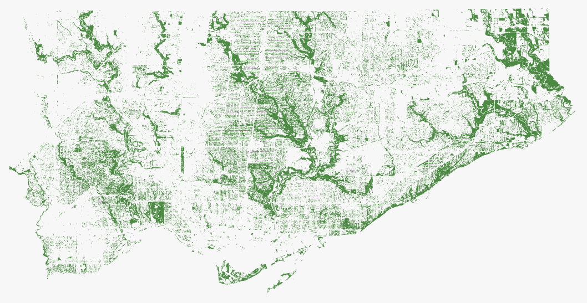
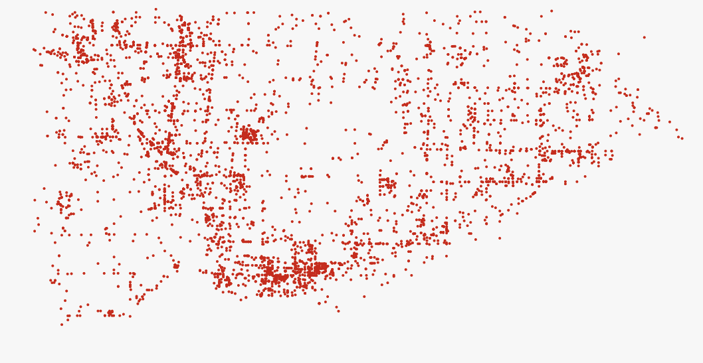
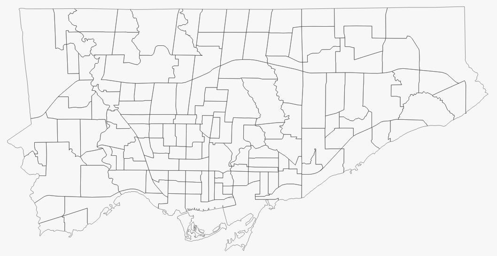

Toronto feature
Celebrating Toronto's 230:
9 ways to see the city
As Toronto turns 230 on July 29th, we started thinking about the geography of the city, both physical and human. The following maps explore a quickly changing city, illuminating the divisions and challenges that define both its present and its future.
August 27, 2023

Aging with its population, Toronto has become a bustling, populous city
The city is packed, and it's only getting more packed. In 2016 population density in Toronto was 4,334, and in 2021 4,428 persons per square kilometer. With most of the population concentrating in the downtown core, where population density is 16,608. Making it the second most dense Canadian downtown core behind Vancouver's own downtown (18,837). In comparison Montreal's downtown density is almost half of Toronto's at 8,367.
Population density, 2021
Source: Statistics Canada
 Hover on each area for more information
Hover on each area for more information Tap on each area for more information
Tap on each area for more information
In the city, the population grew from an estimated 2,731,571 in 2016 to 2,794,356 in 2021. That's an increase of 2.3%. In comparison, Canada as a whole grew by 5.2% and Ontario 5.8%.
Population change between 2016 and 2021
Source: Statistics Canada
Hover on each area for more informationTap on each area for more information
Toronto is getting older. As a whole, the population's average age grew almost one year between 2016 and 2021. What is bad about that? how can we solve it?
Change in the average age between 2016 and 2021
Source: Statistics Canada
Hover on each area for more informationTap on each area for more information
It's a wealthy city, but unevenly so
In 2021, the median total household income in Toronto was $84,000, an increase of about $18,000 since 2016. This is the lowest of all regions in the Greater Toronto and Hamilton Area.
The distribution of wealth around the city is concentrated in two major areas. Roughly in the centre of the city and in the area of central Etobicoke, where most census tracts have a median household income above $120,000. Lower income areas spread more around the city with two major concentrations in the York and Downtown Core areas.
Median household income, 2020
Median household income, 2020
Source: Statistics CANADA. City of Toronto
Hover on each area for more informationTap on each area for more information
In 2021, almost half (46.6%) of the population living in the Toronto CMA were immigrants. In contrast to the wealth distribution, first generation Canadians are concentrated in areas whith higher population density and lower median household income. In the midst of an aging population, and controversy surrounding the support the city recieves to manage refugees, Toronto received 113,383 new immigrants in 2022
Percentage of first-generation Canadians in private dwellings, 2021
Source: Statistics Canada
Hover on each area for more informationTap on each area for more information
Soaring home prices have an issue in recent years. Toronto's average home prices have doubled from $500,934 in 2012 to $1,066,184 in July 2023. In continued attempts to slow down the increase, Bank of Canada have increased rates to five per cent.
Even for renters, Toronto has become a city for the wealthy. Average rental prices for 2-bedroom aparments are at $2,572. For a person earning minimum wage, this would equal to to working 134.29 hours weekly in order to afford that.
Average home prices, July 2023
Average home prices, July 2023
Source: Toronto Regional Real Estate Board. Canadian Centre for Policy Alternatives
Hover on each area for more informationTap on each area for more information
Many of its divisions are reflected in its politics and crime
After Mayor John Tory resigned to the position for having a months-long affair with a former staffer, over one hundred candidates stepped up to the position in upcoming mayoral elections. Of those, only two stood out. Olivia Chow and Ana Bailão. Even with the support of John Tory, Bailão failed rally enough votes, and Chow won the elections.
How Toronto voted in the June 2023 mayoral election.
Voting trend between Olivia Chow and Ana Bailão.
Source: City of Toronto
Hover on each area for more informationTap on each area for more information
Growing gun violence in the city has been an ongoing issue. Between 2010 and 2014 there were decreasing numbers, but since 2015 the average doubled from the prvious decade. Between 2004 and 2022, Toronto saw 5,707 incidents of firearm discharges. In those, 699 people died, and there were 2,786 injuries. With only 379 in 2022, Toronto saw the least ammount of incidents since 2016 where there were 407. The worse year for toronto firearm discharges was 2019 where there were 492 incidents.
Shootings and firearm discharges, 2014-2023
Source: City of Toronto
Hover on each area for more informationTap on each area for more information
Car thefts in Toronto have been on a steady increase since 2015. In Toronto as a whole, there were 9,606 vehicle thefts in 2022. That's almost triple the amount of thefts in 2015, when 3,284 vehicles were stolen within the city.
Car thefts per 100,000 people, 2022
Car thefts per 100,000 people, 2022
Source: City of Toronto. Toronto Police Service
Hover on each area for more informationTap on each area for more information